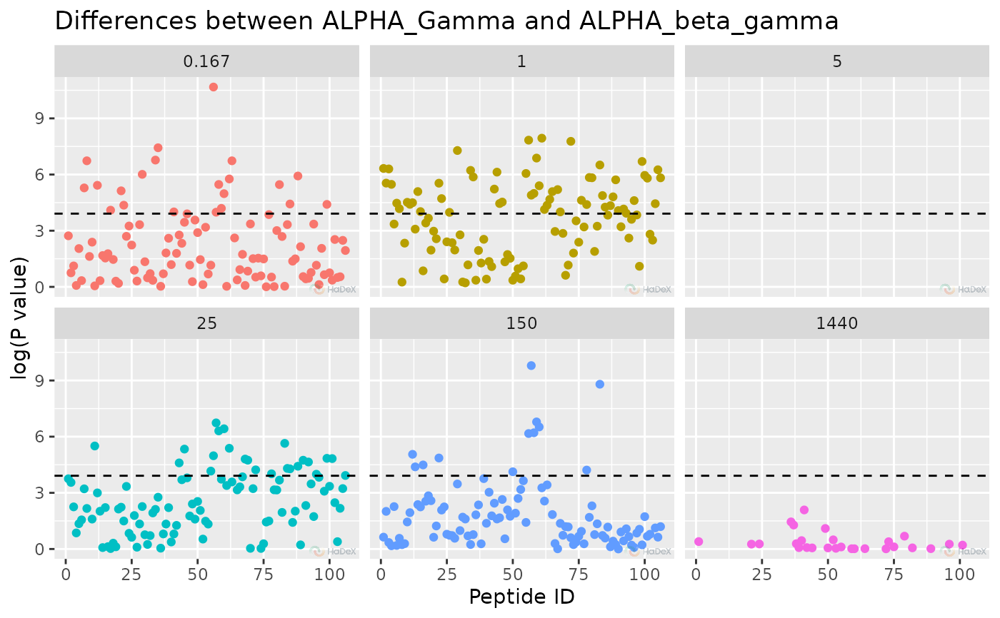
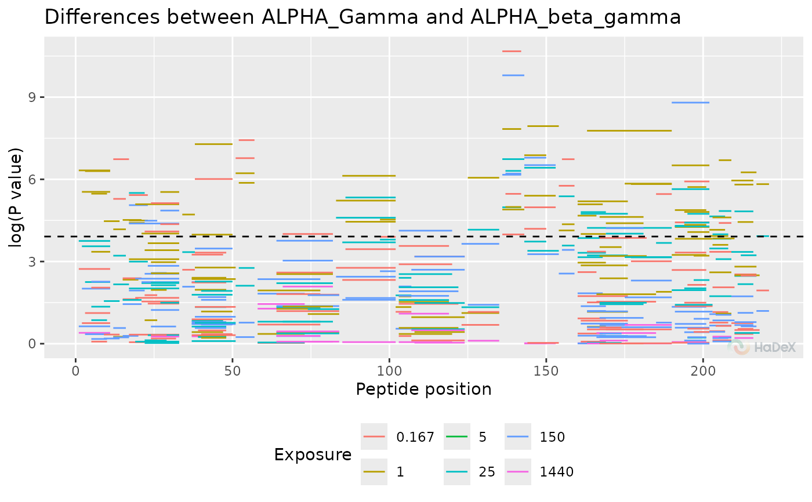

Manhattan plot
plot_manhattan.RdManhattan plot with p-values from the t-Student test and peptide position.
Usage
plot_manhattan(
p_dat,
skip_amino = 0,
plot_title = NULL,
separate_times = TRUE,
times = NULL,
confidence_level = NULL,
show_confidence_limit = TRUE,
show_peptide_position = FALSE,
interactive = getOption("hadex_use_interactive_plots")
)Arguments
- p_dat
data produced by the
create_p_diff_uptake_datasetfunction.- skip_amino
integer, indicator how many aminos from the N-terminus should be omitted- plot_title
title for the plot. If not provided, it is constructed in a form: "Differences between state_1 and state_2"
- separate_times
logical, indicates if the data should be seen on the same plot, or on separate plots for each time point of measurement.- times
vector of time points of measurements to be included in the plot.
- confidence_level
confidence level for the test, from range [0, 1].
- show_confidence_limit
logical, indicates if the hybrid testing confidence intervals are shown.
- show_peptide_position
logical, indicates if the peptide length and position in the sequence is shown. Otherwise, the peptides are represented by their ID.- interactive
logical, whether plot should have an interactive layer created with with ggiraph, which would add tooltips to the plot in an interactive display (HTML/Markdown documents or shiny app).
Details
The manhattan plot presents the P-values from t-student test, to see the regions of the protein with statistically significant changes between two biological states. On X-axis there is a position in a sequence, with length of a segment of each peptide representing its length. On Y-axis there is P-value from t-Student test.
References
Hageman, T. S. & Weis, D. D. Reliable Identification of Significant Differences in Differential Hydrogen Exchange-Mass Spectrometry Measurements Using a Hybrid Significance Testing Approach. Anal Chem 91, 8008–8016 (2019).
Examples
p_dat <- create_p_diff_uptake_dataset(alpha_dat)
plot_manhattan(p_dat)
#> Warning: Removed 191 rows containing missing values or values outside the scale range
#> (`geom_point()`).

plot_manhattan(p_dat, separate_times = FALSE)
#> Warning: Removed 191 rows containing missing values or values outside the scale range
#> (`geom_point()`).
plot_manhattan(p_dat, show_peptide_position = TRUE, separate_times = FALSE)
#> Warning: Removed 191 rows containing missing values or values outside the scale range
#> (`geom_segment()`).

plot_manhattan(p_dat, separate_times = FALSE, show_confidence_limit = FALSE)
#> Warning: Removed 191 rows containing missing values or values outside the scale range
#> (`geom_point()`).